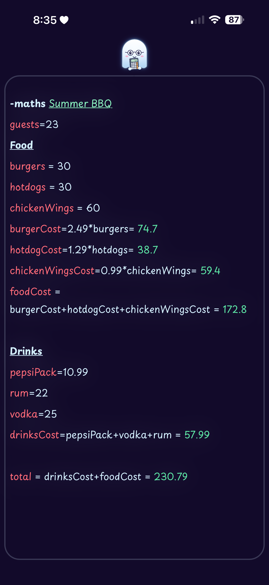
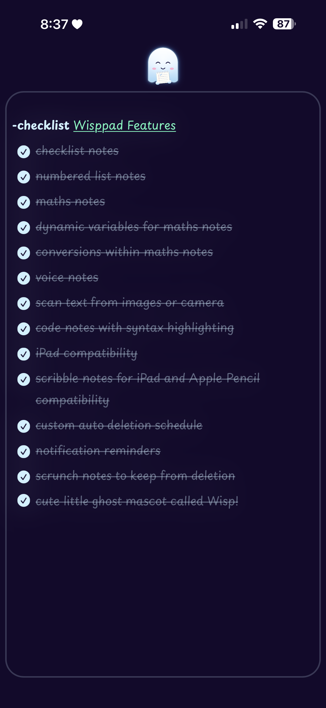
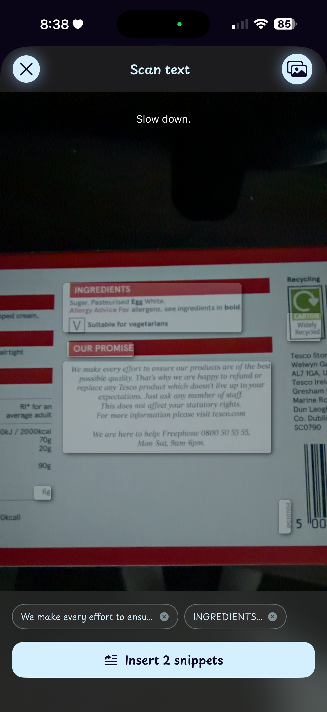
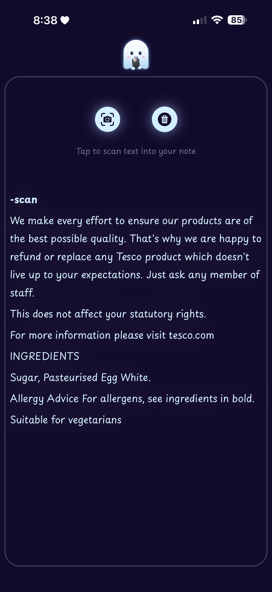
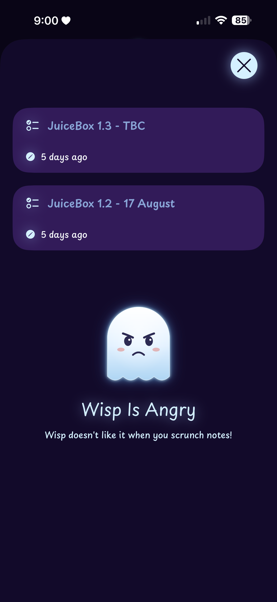
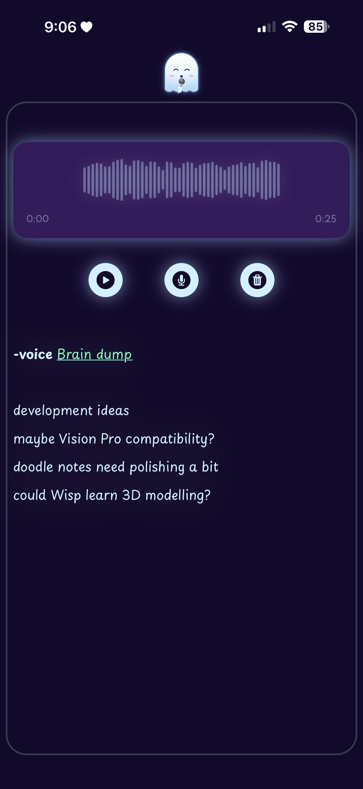

Designed around the idea of impermanence. Notes fade out and wisp away after their time is up.
Auto-deletion
Set a default time for notes to delete automatically. Notes reset their timer when edited.
Maths notes
Type expressions and get instant results, perfect for quick calculations on the go.
Code snippets
Store syntax-highlighted code snippets with support for multiple languages.
Voice notes
Record quick voice memos without leaving the app or switching contexts.
Checklists & lists
Create simple checklists or numbered lists for quick task tracking.
Camera OCR & handwriting
Scan text with your camera or write naturally with your finger or Apple Pencil.
Pinch to keep
Scrunch a note with two fingers to keep it indefinitely, though Wisp won't be happy.
Wisp away
Watch notes fade out and disappear in a puff of smoke when their time runs out.
iCloud sync
Notes sync privately across all your devices through your iCloud account.
A closer look
Simple, focused, ephemeral






See it in action
Create notes that auto-delete after a chosen time
Use special note types like maths, code, voice, and handwriting
Watch notes fade and wisp away when their time is up
Scrunch notes with two fingers to keep them forever
Sync privately across all your Apple devices
Questions
Frequently asked
Wisppad runs on iPhone and iPad with iOS 16 or later. Handwriting notes work best with Apple Pencil on iPad.
Yes. Set a default deletion time in settings, and each note can have its own custom time if needed. Notes reset their timer whenever you edit them.
Pinch the note with two fingers, like scrunching a piece of paper. It'll stay indefinitely, though your companion Wisp won't be pleased.
Yes. Notes are stored on your device and synced only through your private iCloud account. No third-party servers, no ads, no tracking.
While building JuiceBox, I accumulated hundreds of quick notes I never deleted. Wisppad is designed around the idea that most quick thoughts don't need to last forever.